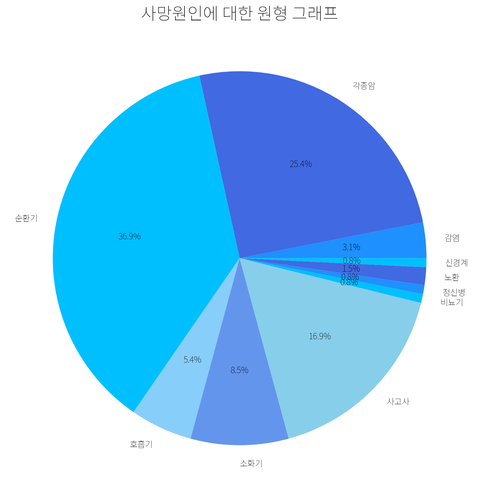
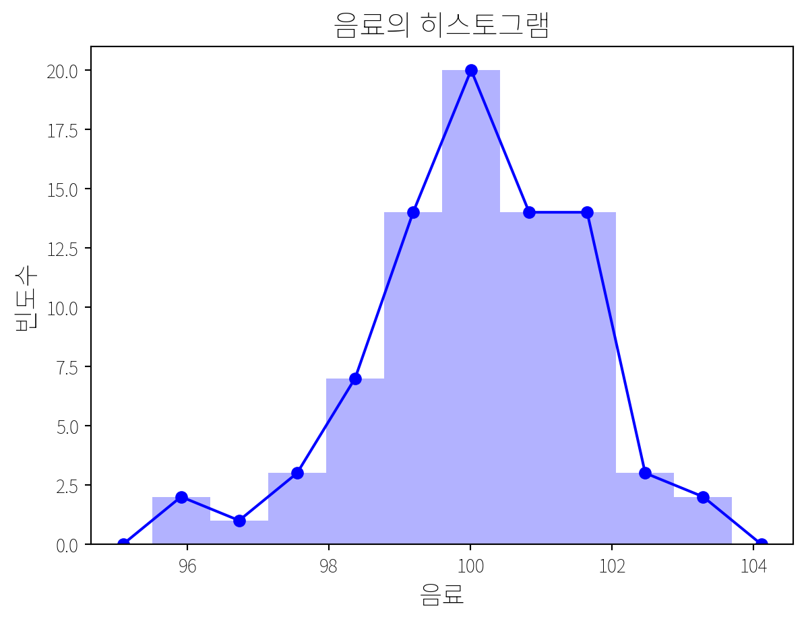

import numpy as np
# 변수 death에 NumPy 배열을 할당
death = np.array([2, 1, 2, 4, 2, 5, 3, 3, 5, 6, 3, 8, 3,
3, 6, 3, 6, 5, 3, 5, 2, 6, 2, 3, 4, 3,
2, 9, 2, 2, 3, 2, 7, 3, 2, 10, 6, 2, 3,
1, 2, 3, 3, 4, 3, 2, 6, 2, 2, 3, 2, 3,
4, 3, 2, 3, 5, 2, 5, 5, 3, 4, 3, 6, 2,
1, 2, 3, 2, 6, 3, 3, 6, 3, 2, 3, 6, 4,
6, 5, 3, 5, 6, 2, 6, 3, 2, 3, 2, 6, 2,
6, 3, 3, 2, 6, 9, 6, 3, 6, 6, 2, 3, 2,
3, 5, 3, 5, 2, 3, 2, 3, 3, 1, 3, 3, 2,
3, 3, 4, 3, 6, 6, 3, 3, 3, 2, 3, 3, 6])자료를 효과적으로 이해하려면 자료의 형태와 특성에 맞춰 표와 그림을 활용해 요약해야 한다.
자료 요약 방법은 자료의 종류와 구조에 따라 달라진다.
- 정량 자료: 수치 중심, 평균·분산·빈도표, 히스토그램, 상자 그림(Box plot) 활용
- 정성 자료: 텍스트·범주 중심, 분류표, 워드클라우드, 네트워크 도식 활용
표와 그림은 단순히 보여주는 것이 아니라 핵심 정보 전달과 패턴·관계 파악을 돕는다. 자료를 요약할 때는 중요한 변수와 비교 지점을 우선 고려하여 시각화/표 형태로 정리하는 것이 효율적이다.
01 예제 1
사망자 목록 중 130명을 임의로 추출, 이들의 사망원인을 10가지로 분류하였다.(p.35)
python
02 도수분포표
Frequency Distribution Table
특정 데이터 집합의 값들이 속하는 범위와 속한 값들의 빈도수를 요약한 표.
python
import pandas as pd
# death 배열의 빈도수를 계산하여 도수분포표를 생성
# crosstab 함수: 범주형 변수의 빈도수를 교차표 형식으로 표현
table = pd.crosstab(index=death, colnames=["질병"], columns="도수")
# 인덱스를 질병 이름으로 설정
# 1: 감염성 질환, 2: 각종 암, 3: 순환기 질환, 4: 호흡기 질환, 5: 소화기 질환,
# 6: 각종 사고사, 7:비뇨기 질환, 8: 정신병, 9: 노환, 10: 신경계 질환
table.index = ["감염" , "각종암", "순환기", "호흡기", "소화기", "사고사", "비뇨기", "정신병", "노환", "신경계"]
print(table)질병 도수
감염 4
각종암 33
순환기 48
호흡기 7
소화기 11
사고사 22
비뇨기 1
정신병 1
노환 2
신경계 103 막대 그래프
Bar Chart
데이터의 범주(또는 그룹)별 값을 막대(bar)의 길이로 나타낸 그래프.
python
import matplotlib.pyplot as plt
import numpy as np
# 한글 폰트 설정
plt.rc('font', family='Noto Sans KR')
# 막대 그래프 그리기
num_bars = len(table.index) # 막대의 개수
base_color = [0, 1, 1] # 초기 색상
bar_width = 0.8 # 막대의 폭
# 데이터프레임의 각 행에 대한 반복 작업 정의
for i, (index, row) in enumerate(table.iterrows()):
# 막대의 개수에 따라 색상을 연하게 표현
color = np.array(base_color) * (num_bars - i) / num_bars
# 각 막대의 높이를 도수로 설정
plt.bar(index, row[0], color=color, width=0.5) # 막대의 폭 설정
# 축 레이블 설정
plt.xlabel('질병', fontsize=14) # x축 레이블
plt.ylabel('빈도수', fontsize=14) # y축 레이블
# 제목 설정
plt.title('질병에 따른 막대그래프', fontsize=20)
# x축 눈금 라벨 회전(가로로 표시)
plt.xticks(rotation=0)
plt.show()C:\Users\user\AppData\Local\Temp\ipykernel_24892\2514237286.py:19: FutureWarning:
Series.__getitem__ treating keys as positions is deprecated. In a future version, integer keys will always be treated as labels (consistent with DataFrame behavior). To access a value by position, use `ser.iloc[pos]`

04 원형 그래프
Pie Chart
전체에 대한 각 항목의 비율을 원 모양으로 표현한 그래프.
python
# 한글 폰트 설정
plt.rc('font', family='Noto Sans KR')
# 원형 그래프 크기 설정
plt.figure(figsize=(10, 10)) # 가로, 세로 크기 조절
# 블루 톤 색상 리스트(참고용 블로그 최하단에 표시)
colors = ['dodgerblue', 'royalblue', 'deepskyblue', 'lightskyblue', 'cornflowerblue', 'skyblue', 'deepskyblue']
# 원형 그래프 그리기
# 각 파이조각에 표시될 라벨, 비율 / 시작 각도 / 색상
patches, texts, autotexts = plt.pie(table['도수'], labels=table.index, autopct='%1.1f%%', startangle=0, colors=colors)
# 제목 설정
plt.title("사망원인에 대한 원형 그래프", fontsize=20)
plt.show()
05 파레토그림
Pareto Chart
막대그래프와 누적선그래프를 결합한 형태의 그래프.
파레토 원칙(80/20 법칙): 전체 결과의 80%가 20%의 원인에서 비롯된다는 원칙.
python
import matplotlib.patches as mpatches
# 한글 폰트 설정
plt.rc('font', family='Noto Sans KR')
# 사망 원인에 따른 빈도수를 내림차순으로 정렬
sorted_table = table.sort_values(by = '도수', ascending = False)
cumulative_percentage = sorted_table['도수'].cumsum() / sorted_table['도수'].sum() * 100
# Matplotlib를 사용하여 두 축을 가진 그래프 생성
fig, ax = plt.subplots(figsize=(10, 8)) # 그래프 크기 설정
# 각 질병의 빈도수를 막대 그래프로 표시
sorted_table['도수'].plot(kind = 'bar', color = 'royalblue', ax = ax,
width = 0.8, position = 0.5)
# x축 레이블 설정
ax.set_xlabel('질병 종류', fontsize=14)
# y축 레이블 설정
ax.set_ylabel('빈도수', fontsize=14)
# 누적 상대도수를 선 그래프로 표시
ax2 = ax.twinx()
cumulative_percentage.plot(color = 'black', ax = ax2, style = '-o', use_index = False)
# y축 레이블 설정
ax2.set_ylabel('누적 상대도수 (%)', fontsize = 14)
# y축 포맷 설정
ax2.yaxis.set_major_formatter(plt.FuncFormatter(lambda x, _: f'{int(x)}%'))
# 누적 상대도수와 빈도수의 범례를 표시
p_legend1 = mpatches.Patch(color = 'black', label = '누적 상대도수')
p_legend2 = mpatches.Patch(color = 'royalblue', label = '빈도수')
plt.legend(handles = [p_legend1, p_legend2], loc = 'center right')
# x 축 라벨 각도 조정
ax.set_xticklabels(sorted_table.index, rotation = 0)
# 제목 설정
plt.title("사망 원인", fontsize = 20)
plt.show()
06 도수다각형
Frequency Polygon
도수분포표의 도수를 선으로 연결한 그래프.
python
# 예제2: 정량 100 인 음료수 80 병을 임의로 추출,
# 그 내용물의 측정된 양을 재어 자료를 수집하였다.(p.42)
# 한글 폰트 설정
plt.rc('font', family='Noto Sans KR')
# 데이터
drink = np.array([101.8, 101.5, 101.8, 102.6, 101, 96.8, 102.4, 100, 98.8, 98.1,
98.8, 98, 99.4, 95.5, 100.1, 100.5, 97.4, 100.2, 101.4, 98.7,
101.4, 99.4, 101.7, 99, 99.7, 98.9, 99.5, 100, 99.7, 100.9,
99.7, 99, 98.8, 99.7, 100.9, 99.9, 97.5, 101.5, 98.2, 99.2,
98.6, 101.4, 102.1, 102.9, 100.8, 99.4, 103.7, 100.3, 100.2,
101.1, 101.8, 100, 101.2, 100.5, 101.2, 101.6, 99.9, 100.5,
100.4, 98.1, 100.1, 101.6, 99.3, 96.1, 100, 99.7, 99.7, 99.4,
101.5, 100.9, 101.3, 99.9, 99.1, 100.7, 100.8, 100.8, 101.4,
100.3, 98.4, 97.2])
# 히스토그램 생성
plt.figure()
n, bins, patches = plt.hist(drink, bins = 10, facecolor = "blue", alpha = 0.3)
# 빈 중심 계산
# bins 리스트의 인접한 두 값의 평균을 구해서 중심을 계산
x = [(bins[i] + bins[i + 1]) / 2 for i in range(len(bins) - 1)]
w_bin = bins[1] - bins[0]
x.insert(0, x[0] - w_bin)
x.append(x[-1] + w_bin)
# n의 시작과 끝에 0 추가
# 시작과 끝에 빈도를 0으로 설정
n = np.insert(n, 0, 0.0)
n = np.append(n, 0.0)
# 히스토그램 데이터 포인트 플로팅
plt.plot(x, n, 'b-', marker = 'o')
# 라벨 및 제목 추가
plt.xlabel('음료', fontsize = 14)
plt.ylabel('빈도수', fontsize = 14)
plt.title('음료의 히스토그램', fontsize = 16)
plt.show()